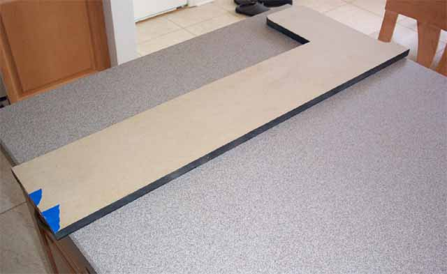
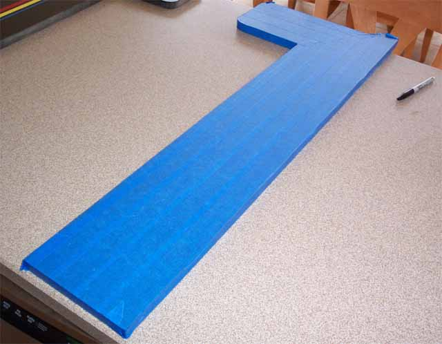

Now for the other smaller side panels. Based on the photo the kiosk side panels were in two parts, the larger 6' tall pieces and the smaller pieces that make up the front and control panel area. Based on the photo I went with the following dimensions. The depth would be 7" to add to the larger side panels depth of 17" for a total side panel depth of 24" The control panel height would be 36", and would come up 14" (you may want to come out up to 16" for more depth for your Odyssey2, but I found 14" to work well). On the control panel front the side pieces would come down 6". On the top of the control panel in the back, the side panel goes up another 1 1/2" higher with a curve, so that piece was 1 1/2" high by 3" deep and a curve was cut out. You should now have a piece that looks like this:

Same routine here on both small side panels, put about 3-4 coats of semi-gloss black onto them, let sit for a few hours to dry well. Then usings some wide masking tape I actually covered the whole panels.

Prepare both panels like this. You'll need a good pen or a Sharpie marker, a t-square or long flat ruler and a small can or circle guide. Time to draw out the racing stripes pattern onto the tape, then onto the next step....